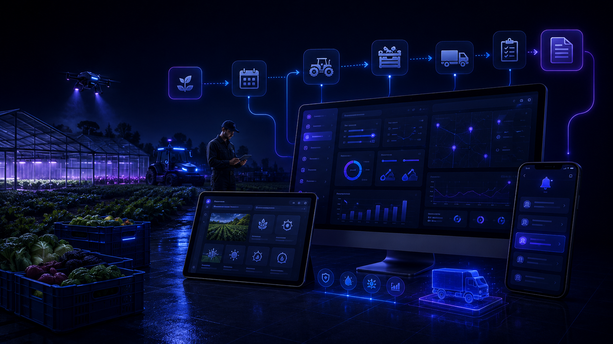

VVZ ERP Suite pour exploitations agricoles et petites structures rurales
Quand la saison avance, les tâches s’accumulent vite : une intervention à prévoir, un matériel à préparer, une parcelle à contrôler, une commande à suivre, une note prise sur le téléphone et une information qui reste dans la mémoire de la personne qui l’a reçue. Le problème n’est pas que vous manquez d’outils : c’est souvent qu’ils sont séparés et qu’il faut reconstruire l’information au moment où elle devient urgente.

Le vrai problème : trop d’informations séparées au mauvais moment
Une exploitation peut déjà utiliser des tableaux, des notes, des applications, des messages ou du papier. Le problème apparaît lorsqu’une tâche importante dépend d’une information située ailleurs : une date, une quantité, un matériel, une personne responsable ou une action à ne pas oublier.
Avant
Une tâche est dans un carnet, une quantité dans Excel, une commande dans un message et une décision importante reste parfois uniquement dans la mémoire de la personne qui l’a prise.
Après
Chaque tâche ou demande peut regrouper le site ou la parcelle concernée, ce qui doit être fait, les ressources utiles, la personne responsable, le statut et l’historique.
Les situations typiques d’une exploitation
Tâches saisonnières
Les travaux à prévoir peuvent rester visibles avec leur période, leur priorité et les informations nécessaires à leur réalisation.
Parcelle, site ou zone
La tâche peut être associée à la parcelle, au bâtiment, au site ou à la zone concernée afin de retrouver rapidement le contexte.
Matériel et ressources
Les éléments nécessaires peuvent être notés avec la tâche : matériel à préparer, quantité à vérifier, ressource disponible ou point encore à confirmer.
Commande ou action en attente
Lorsqu’une tâche dépend d’une livraison, d’une décision ou d’une autre action, le suivi peut montrer clairement ce qui bloque encore.
Un parcours simple, de la tâche au travail terminé
Besoin identifié
Une tâche, une intervention ou une action à prévoir est enregistrée avec les informations utiles.
Lieu concerné
La parcelle, le site, le bâtiment ou la zone sont associés à la tâche pour garder le bon contexte.
Préparation
L’équipe voit ce qui doit être préparé, vérifié ou commandé avant de commencer.
Attribuée
La tâche peut être confiée à la personne qui doit agir ou suivre son avancement.
En cours
Les informations importantes peuvent être ajoutées au fur et à mesure sans perdre les décisions précédentes.
En attente
Si une livraison, une pièce, une autorisation ou une autre action est nécessaire, le statut peut montrer clairement pourquoi la tâche n’avance pas encore.
Terminée et historique
Une fois le travail terminé, le statut change mais les informations, notes et actions réalisées restent disponibles dans l’historique.
L’exploitation garde ses repères
Vos outils actuels peuvent rester en place
Si vous utilisez déjà un logiciel, un tableau ou une application qui fonctionne bien pour une partie de votre activité, il n’est pas nécessaire de tout remplacer. VVZ ERP Suite peut surtout organiser les informations et tâches qui restent aujourd’hui dispersées.
Excel peut rester dans le flux
Si vous utilisez déjà des tableaux pour suivre certaines tâches, quantités, dates ou ressources, ils peuvent rester une référence. Le journal peut reprendre les informations réellement utiles à votre fonctionnement.
Un export utilisable dans Excel
Les données utiles peuvent être exportées dans un fichier CSV compatible avec Excel, avec une structure adaptée à vos colonnes de travail.
L’information reste accessible là où l’équipe travaille
L’outil local
L’exploitation peut utiliser un outil local pour retrouver les tâches, sites, responsables, statuts, notes et informations utiles au suivi.
Le serveur
Le serveur intervient uniquement pour les fonctions qui en ont besoin, par exemple recevoir une demande depuis un site ou synchroniser certaines informations.
Telegram
Telegram peut simplement prévenir les personnes autorisées lorsqu’une nouvelle tâche apparaît ou lorsqu’une action importante doit être vue rapidement. Le suivi principal reste dans l’outil.
Responsabilité visible
Chaque tâche peut montrer qui doit agir, ce qui attend encore une décision et ce qui a déjà été réalisé.
Adapté à votre exploitation
VVZ Studio adapte les informations, les étapes et les rôles à votre façon de travailler au lieu de vous imposer un fonctionnement rigide.
Questions fréquentes
Faut-il remplacer nos logiciels actuels ?
Non. Si un outil fonctionne bien pour une partie de votre activité, il peut rester en place. L’objectif est surtout d’éviter les doubles saisies, les informations dispersées et les tâches qui dépendent uniquement de la mémoire.
La solution gère-t-elle toute l’exploitation agricole ?
Non. Le périmètre dépend de votre besoin. La solution peut se limiter au suivi des tâches, demandes, ressources et informations utiles sans remplacer tous vos outils spécialisés.
Faut-il abandonner Excel ?
Non. Les tableaux existants peuvent rester une référence et les données utiles peuvent être exportées en CSV compatible avec Excel.
Démonstration vidéo prochainement
Une courte démonstration montrera comment une tâche, un site, une attribution, une action en attente et un changement de statut peuvent être suivis dans le système.
Un périmètre défini clairement
Les fonctions, les accès, les informations suivies et les éventuelles intégrations sont définis avec l’exploitation avant la mise en place.
Un prix basé sur votre fonctionnement réel
Le prix dépend de votre organisation actuelle, des outils déjà utilisés, du nombre d’étapes à suivre et des fonctions dont votre exploitation a réellement besoin. L’objectif n’est pas de vous vendre des modules inutiles.
Découvrez aussi l’ensemble des options et intégrations de VVZ Studio.